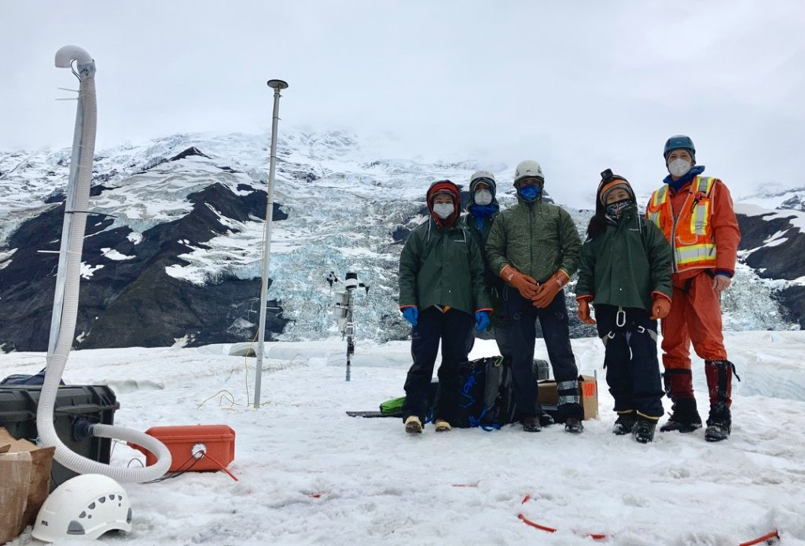
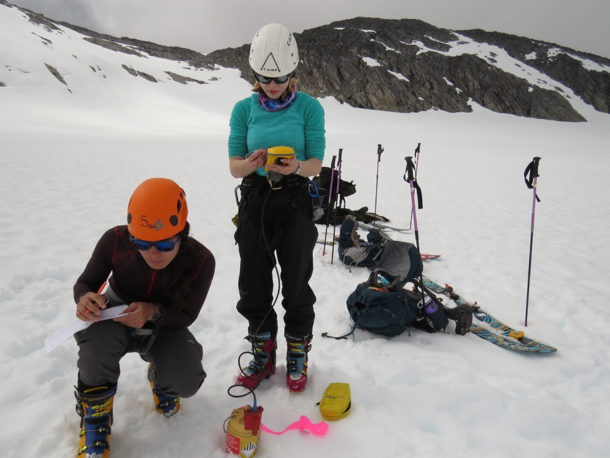

The Univ. of Idaho Glacier Dynamics lab is very pleased to announce two new opportunities for prospective Ph.D. students, to start Fall 2021, or potentially earlier.
To understand water flow through and beneath glaciers, and the effect of this water on glacier dynamics, these two Ph.D. students will work with seismic and other geophysical data to meet the goals of NSF- and NASA-funded projects in Alaska. The two projects, Spring melt and basal slip at Wolverine Glacier and Basal slip during a Turner Glacier surge, are described below. Both projects offer significant opportunities for field work, although field work is not required. While applicants for the Ph.D. are preferred, strong M.S. applicants will be considered. You can learn more about the University of Idaho graduate program, research, and life in Moscow, Idaho here.
If you are interested in joining our group to work on these projects, you may send an email with CV to Tim Bartholomaus (address at the bottom) expressing your interest. Applicants should have strong quantitative skills, enthusiasm for scientific computing and geophysics, and a commitment to challenging oneself and learning through the process. Applications to the Ph.D. program at the University of Idaho should be received by January 15th for full consideration.
Spring melt and basal slip at Wolverine Glacier
During the winter, glaciers are covered with a blanket of snow that melts in part or in whole during the summer. As the winter snowpack melts, meltwater must percolate through an initially dry, cold snowpack. This snowpack delays the delivery of meltwater from the glacier surface to the glacier bed and potentially enables a stronger dynamic response to the meltwater once the snowpack saturates. Little is known about glacier hydrology during the winter-spring transition, or anytime outside of mid-summer. Without a more detailed understanding of the full range of glacier hydrology-dynamics coupling, estimates of future sea level rise will continue to suffer large uncertainties.
This project aims to reduce the significant gap in our understanding of glacier hydrology by studying the evolving winter-spring snowpack of Wolverine Glacier, a glacier with a long history of study in the Chugach Range of south-central Alaska. Inspired by coupled hydrologic and dynamic observations, this project will quantify and understand time lags between melt and dynamic effects, assess the relative contributions of runoff and densification to changing snowpack thickness, and produce more complete models of glacier hydrology and dynamics. The student will work with unprecedented data to study the temperature and water pressure evolution within the spring snowpack, glacier motion, and seismic recordings of subglacial water flow. The successful applicant will have the opportunity to participate in field work, including in spring of 2021 and will also participate in science communication, outreach, and teacher training at the University of Idaho McCall Outdoor Science School (MOSS). This project is funded by NASA and is part of a larger, multi-investigator, multi-grad student, effort in collaboration with Boise State University and the USGS in Alaska.
Basal slip during a Turner Glacier surge
The relationship between glacier hydrology, subglacial sediment, and glacier motion is poorly understood. Glaciologist's understanding of the connection between basal slip and drag at the base of glaciers is a foundational gap in understanding of the physics of glaciers and ice sheets. As a result, models aimed at predicting glacier response to increased melt lack predictive capability. In part, this poor understanding results from the historical challenge of observing the subglacial environment over time and space scales, as subglacial hydrology, sediment, and basal slip change.
To meet this observational gap, the UI Glacier Dynamics lab began a project in August 2020 to study the incipient surge of Turner Glacier, in southeast Alaska. The new Ph.D. student will work with seismic data collected on and around the glacier to study water flow and storage beneath the glacier, and knit this seismic analysis with other geophysical datasets to unravel the connections between water, sediment and fast glacier flow. The successful applicant will be able to play a key role in future project field work, although field work is not necessary for the position. This project is funded by the National Science Foundation and represents a collaborative effort with Flavien Beaud at UI/UBC, and Ellyn Enderlin and Dyland Mikesell at Boise State University.
Read more about this exciting project in a previous post, or learn the latest about the project via Twitter.


Please be in touch about these great opportunities! It's a wonderful time to join our lab.